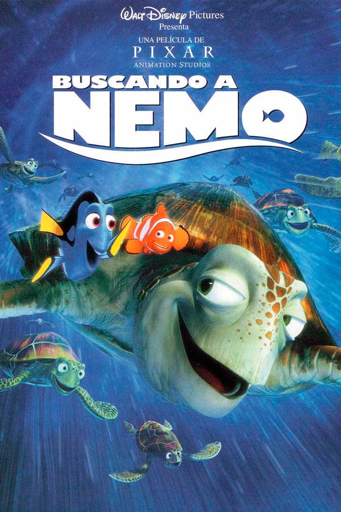
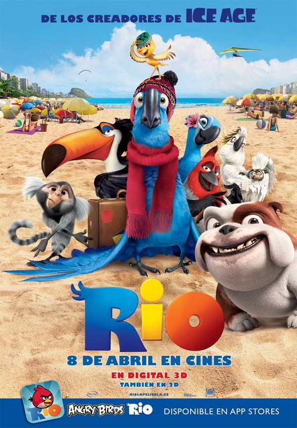
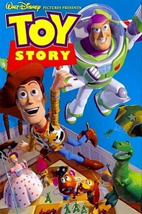

Frozen (Frozen: Una aventura congelada)
Duracion:
102 Minutos
Estreno:
27 de nomviembre 2013
Genero:
Animación,
fantasía,
drama,
romance,
comedia,
aventuras,
musical
Donde se filmo:
Estados unidos de america
Producida por:
Walt Disney Animation Studios,
Walt Disney Pictures
Dirigida por:
Chris Buck,
Jennifer Lee
Elenco:
Kristen Bell como Anna,
Idina Mezel como Elsa,
Jonathan Groff como Kristof,
Josh Gad como Olaf,
Jeniffer Lee como Queen Iduna,
Santino Fortana como Hans.
Sinopsis:
Una profecía condena al reino de Arandelle a vivir en un invierno eterno. La joven Anna, el temerario montañero Kristoff y el reno Sven deben emprender un viaje épico y lleno de aventuras en busca de Elsa, la hermana de Anna y Reina de las Nieves. Ella es la única que puede poner fin al gélido hechizo.

Buscando a nemo
Duracion:
100 Minutos
Estreno:
30 de mayo de 2003
Donde se filmo:
Estados unidos de america
Genero:
Animacion, infanil, comedia, aventura
Producida por:
Graham Walters,
John Lasseter
Dirigida por:
Andrew Stanton,
Lee Unkrich
Elenco:
Albert Brooks como Marlin,
Ellen Degeneres como Dary,
Alexander Gould como Nemo,
Williem Deafoe como Gill,
Brad Garrett como Globo,
Alison Janney como Peach,
Austin Pendleton como Gluglú,
Stephen Root como Burbujas.
Sinopsis:
Nemo, un pequeño pececillo, muy querido y protegido por su padre, se pierde fuera de la gran barrera del arrecife australiano, después de ser capturado por este arrecife, Nemo terminará en una pecera en Sidney.
Su padre, un pez payaso, parte en su búsqueda y se embarca en una peligrosa aventura con Dory, un pez con muy poca memoria. Al mismo tiempo, Nemo y sus nuevos amigos ya traman un plan para escapar de la pecera.
Rey león
Duracion:
88 Minutos
Donde se filmo:
Estados unidos de america
Genero:
Musical, animacion, pelicula infantil y drama
Producida por:
Walt Disney Animation Studios
Estreno:
24 de junio de 1994
Dirigida por:
Rob Minkoff,
Rogers Allers
Elenco:
James Earl como Mufassa,
Jeremy Irons como Scar,
Matthew Broderick como Simba,
Nathan Lane como Timon,
Whoopi Goldberg cmomo Shenzi,
Jonathan Taylor como Zimba.
Sinopsis:
Tras la muerte de su padre, Simba vuelve a enfrentar a su malvado tío, Scar, y reclamar el trono de rey.

Rio 1
Duracion:
96 Minutos
Genero :
Animación, aventura, comedia, infantil
Estreno:
15 de abril de 2011
Donde se filmo:
Estados unidos de america y brasil
Producida por:
20th Century Fox y Blue Sky Studios
Dirigida por:
Carlos Saldanha
Elenco:
Jesse Eisenberg como Blu,
Anne Hathaway como Jewel,
George López como Rafael,
Jemaine Clement como Nigel,
will.i.am como Pedro,
Jamie Foxx como Nico,
Tracy Morgan como Luis,
Leslie Mann como Linda,
Rodrigo Santoro como Túlio,
Jake T. Austin como Fernando,
Carlos Ponce como Marce,
Francisco Ramos como Mauro, líder de los monos.
Sinopsis:
Blu es un guacamayo domesticado que nunca aprendió a volar, y que disfruta de una cómoda vida al lado de su propietaria y amiga, Linda, en la pequeña ciudad de Moose Lake (Minnesota).
Blu y Linda creen que él es el último de su especie, pero cuando se enteran de la existencia de otro guacamayo que vive en Río de Janeiro, dirigen sus pasos hacia tan lejana y exótica tierra al encuentro de Perla, la homóloga femenina de Blu.
No mucho después de su llegada, Blu y Perla son secuestrados por un grupo de torpes contrabandistas de animales. Blu huye con la ayuda de la avispada Perla y la de un grupo de bromistas y zalameros pájaros de ciudad. Ahora, al lado de sus nuevos amigos, Blu tendrá que encontrar el valor para aprender a volar, dar esquinazo a los secuestradores que les pisan los talones y regresar junto a Linda, la mejor amiga que jamás haya tenido un pájaro.

Toy story 1
Duracion:
81Minutos
Genero :
Animada, para toda la familia
Estreno:
1995
Donde se filmo:
Estados unidos de america
Producida por:
Pixar
Dirigida por:
John Lasseter
Elenco:
Tom Hanks como el Sheriff Woody,
Tim Allen como Buzz Lightyear,
Don Rickles como Sr. Cara de Papa,
Jim Varney como el perro Slinky,
Wallace Shawn como Rex,
John Ratzenberger como Hamm,
Annie Potts como Bo Peep,
John Morris como Andy Davis,
Erik Von Detten como Sid Phillips,
R. Lee Ermey como el Sargento,
Laurie Metcalf como la Sra. Davis,
Sarah Freeman como Hannah Phillips.
Sinopsis:
Los juguetes de Andy(un niño de 6 años)temen que haya llegado su hora y que un nuevo regalo de cumpleaños les sustituya en el corazón de su dueño.
Woody, un vaquero que ha sido hasta ahora el juguete favorito de Andy, trata de tranquilizarlos hasta que aparece Buzz Lightyear, un héroe espacial dotado de todo tipo de avances tecnológicos. Woody es relegado a un segundo plano.
Su constante rivalidad se transformará en una gran amistad cuando ambos se pierden en la ciudad sin saber cómo volver a casa.